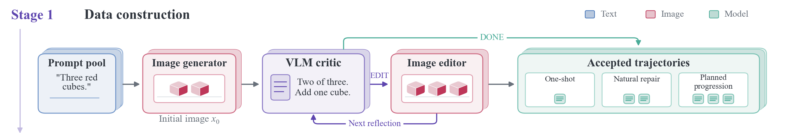
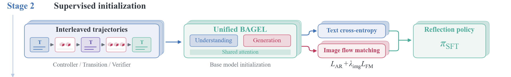
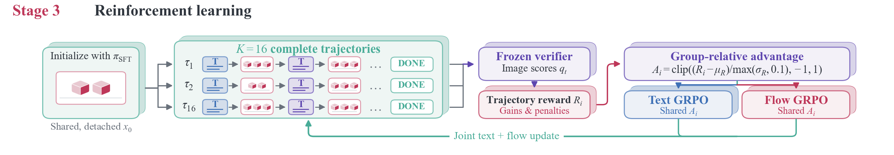
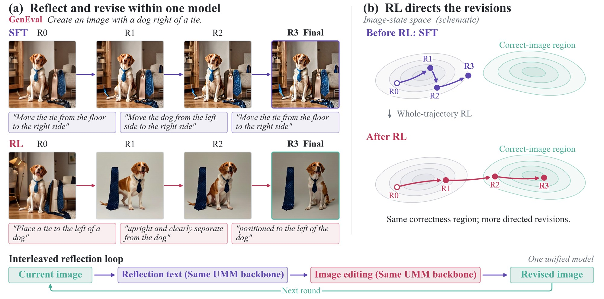
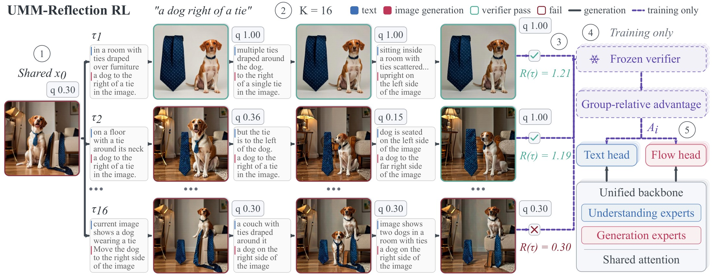

Learning native reflection in unified models with interleaved reinforcement learning



Unified multimodal models can both look at and render images, so in principle they can repair their own generations: diagnose what an image gets wrong, revise it, observe the result, and diagnose again. Whether a revision helps is known only after it is rendered, so the reflection text and the image generation must be learned jointly, over the whole loop. Supervised fine-tuning (SFT) on reflection trajectories gives a cold start but does not find the high-success repair paths, and naive RL that optimizes only the renderer or only one head leaves most of the gain untapped.
We introduce UMM-Reflection, which applies reinforcement learning (RL) to complete reflection trajectories inside one unified model: sibling trajectories share one initial image, so the group-relative advantage compares reflection strategies, and one trajectory-level advantage updates both the reflection tokens and the flow-based revisions, avoiding the combinatorial blow-up of per-round credit assignment. Unlike single-round editing or pipelines with an external critic, credit flows across rounds and to both roles of the same model, and no verifier is needed at inference. On BAGEL, UMM-Reflection improves GenEval by 12.05 points over SFT, and the gains transfer to WISE (+10.97), OneIG-Bench (+3.48), and T2I-CompBench++ (+4.63), none of which is used in training.
Writing a plausible critique is easy. Turning that critique into a better image is the hard part. We compare three ways to give BAGEL a second look at its own output on the 553 official GenEval prompts, each with up to three edits.
A frontier model reads each image and writes the edit instruction. BAGEL performs the edit.
The critic declared 67 of the 163 wrong first images finished at round 0.
The model is fine-tuned on interleaved reflection trajectories and reflects on its own.
It writes reflections in the right format, but the edits rarely fix what was wrong.
Same model and protocol, trained with whole-trajectory RL on the images its reflections produce.
Reflection and generation are trained together, so a diagnosis is rewarded only when the edit it leads to is better.

SFT teaches the format of reflection: inspect, diagnose, write an edit, render it. It cannot tell the model which reflections actually lead to better images, because that is only known after the edit is drawn. RL closes that loop. The model rolls out complete reflection trajectories, a verifier scores the images they produce, and the outcome is credited to both the words and the pixels that led to it.

Verifier scores q for the first image and the three revisions of the rollouts in the figure. Green bars pass the verifier.
R(τ) = qT + α Σ[Δt]+ + β Smulti − λ Σ[−Δt]+ − p·1[premature DONE], with α = β = 0.3 and λ = p = 0.5.
A group-relative estimate for every round would need sibling groups at every round: branching 16 ways at each of three rounds is 16³ = 4,096 rollouts per prompt. The trajectory-level advantage keeps the 16-sample cost of GRPO, while the progress terms in R(τ) still reward each round that improves the image.
The text policy and the flow renderer are not normalized separately. A reflection that leads to a better image raises the advantage of both the diagnostic tokens and the rendering steps that followed, so the model learns which reflections lead to which visual outcomes.
The verifier and the frozen SFT reference are used only to compute rewards and KL during training. At inference only the unified model runs: it looks at its own image, writes the reflection and renders the revision.
All rows use the same prompts, resolution and scorer, with up to three reflection rounds for the models that reflect. RL trains on GenEval-style prompts only; WISE, OneIG-Bench and T2I-CompBench++ measure transfer.
Hover or tap an axis to compare on that benchmark.
Official 553 prompts and detector, 512 px. R0 is the first image; +k allows k edits.
Share of wrong first images that are correct after three edits, along one RL run.
| Model | GenEval | WISE | OneIG | CompBench |
|---|---|---|---|---|
| BAGEL-Base | 0.71 | 0.55 | 0.80 | 0.49 |
| BAGEL-SFT | 0.72+0.00 | 0.63+0.08 | 0.79−0.01 | 0.50+0.01 |
| BAGEL-Self-Agentic | 0.77+0.05 | 0.61+0.06 | 0.81+0.00 | 0.52+0.03 |
| BAGEL-T2I-RL (1k updates) | 0.76+0.04 | 0.54−0.01 | 0.80−0.01 | 0.49+0.00 |
| UMM-Reflection | 0.84+0.12 | 0.74+0.19 | 0.83+0.02 | 0.55+0.06 |
Differences are relative to BAGEL-Base. Self-Agentic runs the untuned base model through the same three inspect-and-edit rounds. T2I-RL applies 1,000 RL updates to single-shot generation, with no reflection.
The first image barely changes. What RL changes is what happens after it: which errors get repaired, on which kinds of prompts, and which half of the model has to learn for that to work.
Trajectory RL with one head frozen. GenEval final accuracy and repair rate of wrong first images.
@article{ummreflection2026,
title = {Learning Native Reflection in Unified Models
with Interleaved Reinforcement Learning},
author = {Authors to be announced},
journal = {arXiv preprint},
year = {2026}
}